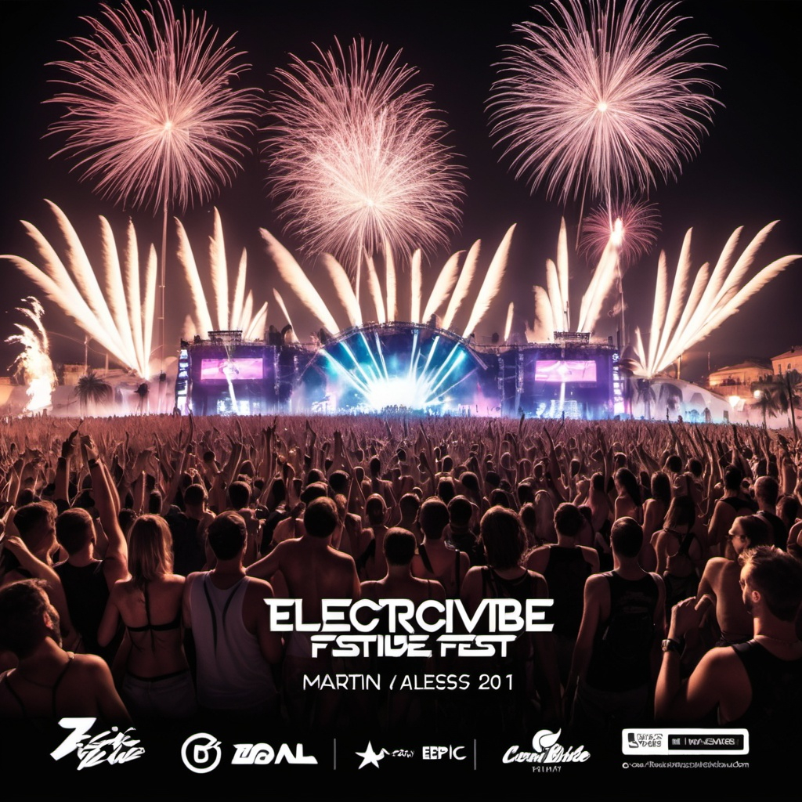
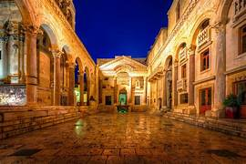
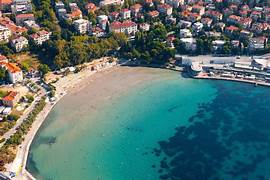
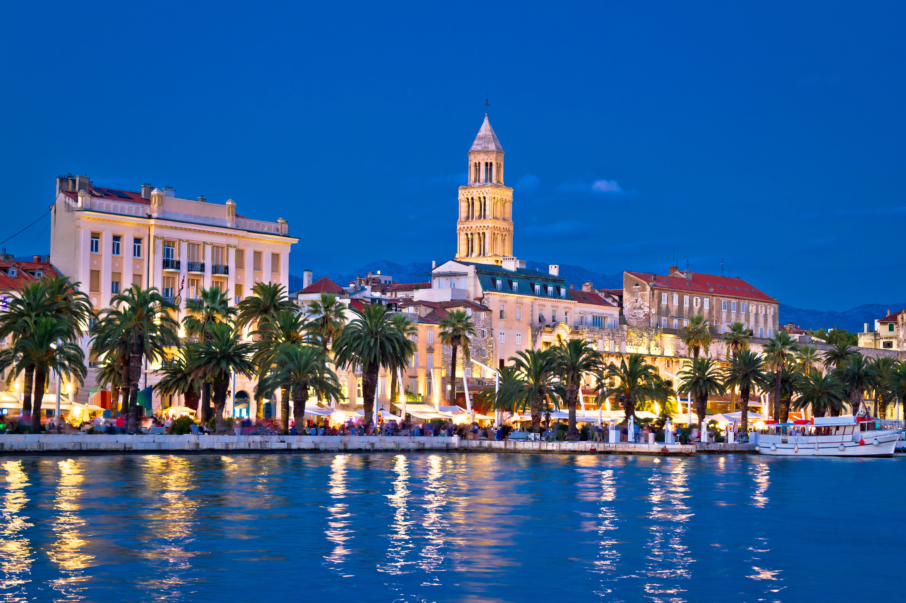

Prepárate para vivir la mejor experiencia de música electrónica del año. ¡No te lo pierdas!
Las fechas serán el 15, 16 y 17 de julio de 2025, en la isla de Split en Croacia.
¿Qué es ElectroVibe Fest?
ElectroVibe Fest es mucho más que un simple evento de música electrónica; es una celebración monumental que reúne a los mejores DJs y productores de todo el mundo. Durante tres días inolvidables, del 15 al 17 de julio de 2025, con escenarios impresionantes decorados con efectos visuales avanzados y una iluminación espectacular, cada presentación será una experiencia única y envolvente.
¡No te pierdas esta oportunidad de ser parte de la celebración más épica del año y crea recuerdos que durarán toda la vida! Disfruta de exclusivos shows en vivo y actuaciones de artistas internacionales que prometen elevar la energía del festival a nuevas alturas. Compra tus entradas ahora y únete a nosotros en ElectroVibe Fest para una experiencia de música electrónica sin igual.
Ubicación
El festival se llevará a cabo en la hermosa isla de Split, Croacia. Rodeada de playas cristalinas y una vibrante vida nocturna, Split ofrece el escenario perfecto para disfrutar de la música electrónica. Además, la ciudad cuenta con una rica historia cultural, lo que la convierte en un destino turístico imperdible.
Lugares destacados en Split
-
Palacio de Diocleciano
 -
La playa de Bacvice
 -
El Parque Marjan

Contacto e Información
Si tienes preguntas sobre el festival o necesitas más información, no dudes en ponerte en contacto con nosotros a través de nuestras redes sociales o consulta nuestra sección de FAQS.